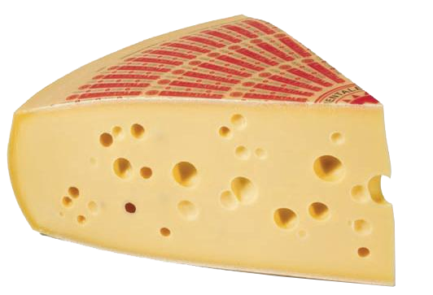
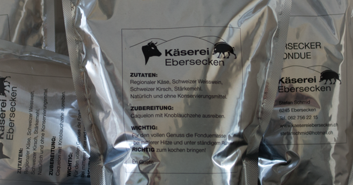

		<div id="hauptinformationprodukte">
	
		<div id="produkte">
		<ul>
			<li>
			<h1>Emmentaler</h1>
			
			<h2>Unser Emmentaler wird in unserer eigenen Käserei verarbeitet. Gerne leiten wir Sie zur Wikipedia Seite über Emmentaler weiter:
			<a href="http://de.wikipedia.org/wiki/Emmentaler" title="">Wikipedia</a></br> 
			
			<div id="abstand">			</div>
			<a href="#Emmentaler" class="openModal">Verkauf</a></h2>

			<aside id="Emmentaler" class="modal">
			<div>
				<p> Folgende Geschäfte verkaufen dieses Produkt: </p> 
				<p>	Detailhandel: </br>
					Grossdietwil, Metzgerei Spatz </br>
					Nebikon, Metzgerei Wechsler </br>
					Nebikon, Spar  </br>
					Buttisholz, Spar </br>
					Sursee, Metzgerei Aerni </br>
				    Schötz, Top Shop </br>
					</p> 
				<a href="#close" title="schließen">schließen</a>
			</div>
			</aside>
			
			</li>

			
			
			<li>
			<h1>Fondue</h1>
			
			<h2>Unser Fondue ist eine Eigenmischung welche wir mit viel Liebe zubereiten.
			
			
						<div id="abstand">			</div>
			<a href="#fondue" class="openModal">Verkauf</a></h2>
			<aside id="fondue" class="modal">
			<div>
			<p> Folgende Geschäfte verkaufen dieses Produkt: </p>
				<p>Detailhandel: </br>
					Grossdietwil, Metzgerei Spatz </br>
					Nebikon, Metzgerei Wechsler </br>
					Nebikon, Spar  </br>
					Buttisholz, Spar </br>
					Sursee, Metzgerei Aerni </br>
				    Schötz, Top Shop </br><br>

					Gastronomie </br>
					Zürich, Gasthaus Schlachthof</br>
					Nottwil, Restaurant Bahnhöfli </br>
					Sursee, Gasthaus wilder Mann </br>
					Zell, Restaurant Sonne </br>
					</p> 
				<a href="#close" title="schließen">schließen</a>
			</div>
			</aside>
			
			</li>
		<ul>
	</div>
	
	</div>
	